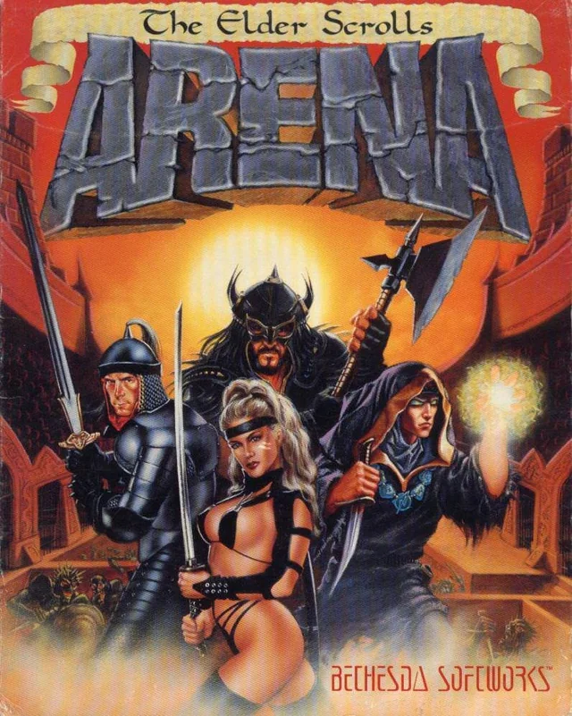

The Elder Scrolls I: Arena
The Elder Scrolls I: Arena
Details
|  | |
| Playtime | Not Played |
| Last Activity | Never |
| Added | 4/30/2025 4:09:09 |
| Modified | 4/30/2025 8:41:08 |
| Completion Status | Not Played |
| Library | Playnite |
| Source | |
| Platform | $PC (Windows) |
| Release Date | 3/25/1994 |
| Community Score | 68 |
| Critic Score | |
| User Score | |
| Genre | ARPG Open world |
| Developer | Bethesda Softworks |
| Publisher | Bethesda Softworks US Gold |
| Feature | Single Player |
| Links | PCGamingWiki Official site GOG Database HowLongToBeat IGDB SteamDB StrategyWiki MobyGames Wikipedia |
| Tag | 1990's Action Action RPG Adventure Atmospheric Character Customization Classic Difficult Dungeon Crawler Exploration Fantasy Female Protagonist First-Person Free to Play Nudity Open World Retro RPG Singleplayer Story Rich |
Description
The Elder Scrolls: Arena is an open-world action role-playing video game developed and published by Bethesda Softworks. The first game in the Elder Scrolls series, it was released for MS-DOS on March 25, 1994. The game follows the player trying to uncover a conspiracy against Emperor Uriel Septim VII.
Arena takes place on the entire continent of Tamriel, complete with wilderness, towns and dungeons which are procedurally generated. The game features a day/night cycle and includes a spell creation system that allows players to mix various spell effects. Development for Arena was initially planned to have the player travel in towns across Tamriel, fighting other teams in their arenas until the player became "grand champion". As development on the game progressed, side quests took more importance, and the tournament aspect of the game took a back seat. Role-playing elements were added to the game, and the game expanded to include towns outside the arenas and dungeons beyond the cities.
Arena would spawn later sequels that created a series which has gone on to become one of the biggest Western RPGs of all time. The game received praise from critics and would go on to win several awards such as Computer Gaming World's 1994 "Role-Playing Game of the Year". The game set a new standard for this type of CRPG and demonstrated just how much room was left for innovation. Although not as popular as the later games, Arena generated a cult following and sold 120,000 units. The game was followed by Daggerfall in 1996. In 2004, a downloadable version of the game was made available free of charge as part of the tenth anniversary of the series.
Gameplay
The game is played from a first-person perspective. Melee combat is performed by right-clicking the mouse and dragging the cursor across the screen to attack as if swinging a weapon. Magic is used by cycling through a menu found by clicking the appropriate button on the main game screen, then clicking the spell to be used, and its target.
The game's world is infinite. While the game's manual claims that the player can walk from one village to another, in actuality it is infinite and requires fast travel to get between towns. This is achieved by combining procedurally generated content and specifically designed world spaces to create a realistic and massive wilderness, where one may find inns, farms, small towns, dungeons, and other places of interest. The towns contain developer-designed buildings and shops, but the order in which these appear and their names are procedurally generated. There are several hundred dungeons and 17 specially designed dungeons for the main quest.
Arena is notable for being one of the first games to feature a realistic day/night cycle, where at sunset shops close and people clear the streets before the monsters arrive and roam around until morning. This soon became a staple feature of most open-world games.
In addition to the main quest, which is completed by beating all seventeen dungeons and finding pieces of the staff, small side quests also appear. These are often found by asking around town for rumours. These quests are usually very simple, such as delivering a parcel or defeating a randomly chosen dungeon.
Arena has been noted for its tendency to be unforgiving towards new players. It is easy to die in the starting dungeon, as powerful enemies can be encountered if the player lingers too long. This effect gradually disappears as the player becomes more powerful and more aware of the threats that loom everywhere. Ken Rolston, lead designer of Morrowind, says that he started the game at least 20 times, and only got out of the beginning dungeon once.
Plot
The game's setting begins in Tamriel on the 389th year of the Third Era when Emperor Uriel Septim VII summons his advisor and Imperial Battlemage Jagar Tharn over concerns of betrayal from within the court. His concerns are justified when Tharn is revealed to be the traitor, magically trapping the Emperor and his general, Talin Warhaft, in another dimension.
When Tharn proceeds to magically disguise himself as Emperor to usurp the throne, his conspiracy is witnessed by mage apprentice Ria Silmane, whom he murders before she can warn the Elder Council. Tharn then summons demon minions to replace the Emperor's Guard. In his disguise, he sends the player character, a court official and subordinate of General Warhaft, to die in the Imperial dungeons.
After her death, Ria uses magic to take an incorporeal form. She holds herself together long enough to inform the imprisoned player of Tharn's betrayal and instructs them throughout their escape from the infamous dungeons. Past that point, she lacks the power to manifest physically and appears to the player during dreams. She creates a key to allow the player to escape the dungeons and teleports them to a different province through a mystical Shift Gate.
The player is informed that the only way to stop Tharn is to get hold of the Staff of Chaos, which holds his life force. Tharn has split this staff into many fragments throughout the continent of Tamriel. Each time one is found, Ria appears to the player the next time they rest to provide the general location of the next fragment. At the end of the quest in 3E 399 (a decade after the start of the game), the player finds the final piece and reassembles the staff. This, however, does not release the Emperor, as all of the staff's power has been drained into the Jewel of Fire, an oversight by Ria. The player travels to the Imperial City to confront Tharn's minions, the player finds the Jewel of Fire and touches it with the Staff of Chaos, this destroys both the jewel and the staff as well as releasing the Emperor. The jewel also turned out to be where Tharn had stored his life force, and the destruction of the jewel resulted in his death. As a token of respect and gratitude, Uriel Septim grants the player the title of Eternal Champion, and Ria Silmane finally enters the afterlife.
Development
Background
Designer Ted Peterson recalls the experience: "I remember talking to the guys at SirTech who were doing Wizardry: Crusaders of the Dark Savant at the time, and them literally laughing at us for thinking we could do it." Peterson worked alongside Vijay Lakshman as one of the two designers of what was then simply Arena, a "medieval-style gladiator game". The game's engine was derived from the same codebase as that of The Terminator: Rampage from 1993.
Ted Peterson, Lakshman and Julian LeFay were those who, in Peterson's opinion, "really spear-headed the initial development of the series." Game journalist Joe Blancato credits company co-founder Chris Weaver with the development: "If Weaver had a baby, Arena was it, and it showed." During the development of Arena, Todd Howard, later executive producer of Oblivion, lead designer on Skyrim and Fallout 3 and 4 and director of Starfield, joined Bethesda Softworks, testing the CD-ROM version of Arena as his first assignment. Peterson had joined the company in 1992, working assignments on Terminator 2029, Terminator: Rampage, and Terminator: Future Shock, as well as other "fairly forgettable titles".
Peterson, Lakshman and LeFay were longtime aficionados of pencil-and-paper role-playing games, and it was from these games that the world of Tamriel was created. They were also fans of Looking Glass Studios' Ultima Underworld series, which became their main inspiration for Arena.
The influence of Legends of Valour, a game Peterson describes as a "free-form first-person perspective game that took place in a single city", has also been noted. Asked for his overall comment on the game, he replied "It was certainly derivative ...". Aside from the fact that Bethesda had made Arena "Much, much bigger" than other titles on the market, Peterson held that the team "[wasn't] doing anything too new" in Arena.
Initially, Arena was not to be an RPG at all. The player and a team of his fighters would travel about a world fighting other teams in their arenas until the player became "grand champion" in the world's capital, the Imperial City. Along the way, side quests of a more role-playing nature could be completed. As the process of development progressed, however, the tournaments became less important and the side quests more. Role-playing elements were added to the game, as the game expanded to include the cities outside the arenas, and dungeons beyond the cities. Eventually it was decided to drop the idea of tournaments altogether, and focus on quests and dungeons, making the game a "full-blown RPG".
The original concept of arena combat never made it to the coding stage, so few artifacts from that era of development remain: the game's title, and a text file with the names of fighting teams from every large city in Tamriel, and a brief introduction for them. The concept of travelling teams was eventually left aside as well because the team's decision to produce a first-person RPG had made the system somewhat less fun. The game was going to have a team of up to four party members, but that feature was dropped and reduced to a single adventurer.
Although the team had dropped all arena combat from the end game, because all the material had already been printed up with the title, the game went to market as The Elder Scrolls: Arena. The team came up with a lore-friendly explanation for this, being because the Empire of Tamriel was so violent, it had been nicknamed the Arena. It was Lakshman who came up with the idea of "The Elder Scrolls", and though, in the words of Peterson, "I don't think he knew what the hell it meant any more than we did", the words eventually came to mean "Tamriel's mystical tomes of knowledge that told of its past, present, and future." The game's initial voice-over was changed in response, beginning: "It has been foretold in the Elder Scrolls ..."
Release
The game was originally due to release on Christmas Day 1993 but it was then released three months later in March 1994. The misleading packaging further contributed to distributor distaste for the game, leading to an initial distribution of only 3,000 units—a smaller number even, recalls Peterson, than the sales for his Terminator 2029 add-on. "We were sure we had screwed the company and we'd go out of business." However, PC Gamer US reported in late 1995:
Arena was originally released on CD-ROM and 3.5" floppy disk. The CD-ROM edition is the more advanced, featuring enhanced speech for some characters and CGI video sequences. In late 1994, Arena was re-released in a special "Deluxe Edition" package, containing the CD-ROM patched to the latest version, a mousepad with the map of Tamriel printed on it, and the Codex Scientia, an in-depth hint book.
The version that was released as freeware by Bethesda Softworks in 2004 is the 3.5" floppy disk version, not the CD-ROM edition. Newer systems may require an emulator such as DOSBox to run it, as Arena is a DOS-based program.
Reception
When previewing the game in December 1993, Computer Gaming World noted Arena's "huge world split into nine provinces", many races and terrains, NPC interactions, and absence of level limits. The magazine stated that the game had sophisticated graphics "without forgetting the lessons of the past in terms of game design" or being "more like [console] action games", citing similarities with Ultima IV, Wasteland, Dragon Wars, and Darklands. The magazine in April 1994 said that Arena "looks like a cross between Ultima Underworld and Might and Magic: World of Xeen", with both depth and sophisticated 3D graphics. It surmised "This may be the 'biggest' world, in terms of game play, that will reach store shelves this year", with a "rich and compelling" storyline and setting. The magazine's Scorpia in May 1994 noted the game's "many, many, many side quests". She liked the combat ("the most natural way of fighting that I've seen in a first-person game"), magic system, world detail, and character creation, but disliked Arena's instability "even with three patches so far" and insufficient travel time to finish quests. Scorpia complained that "in a game of this size, everything eventually becomes mechanical and repetitious", including towns, conversation trees, quests, and enemies, reporting that "Everything is isolated, and there is no sense of a coherent whole here". She said that "Arena ... is too big to offer real variety, and thus becomes no more than a very sophisticated dungeon crawl with minimal plot", but hoped that Bethesda would apply to Elder Scrolls "a tightening of the code, a little polishing up of the basic engine, a little scaling back of the size, and the inclusion of some real role-playing elements ... with a solid storyline. These are well within Bethesda's abilities". The next month she reported that another patch had been released and a fifth was being developed ("Obviously, the game was released far, far too soon, with less than adequate playtesting"). She advised players to store their save games after finishing Arena, as "I expect that the next game will show quite a few improvements over the initial entry in the series".
In PC Gamer US, Bernie Yee summarized Arena as a "stunning technological achievement; give this game a better storyline, and you might have the best FRP ever designed." Later that year, the magazine named Arena the 18th greatest game of all time. The editors praised it as "next-generation role-playing that will satisfy both newcomers and veterans alike." The game was a runner-up for PC Gamer US's 1994 "Best Role-playing Game" award, losing to Realms of Arkania: Star Trail. Barry Brenesal of Electronic Entertainment wrote, "While The Elder Scrolls, Chapter One: Arena has nothing revolutionary to offer in role-playing fantasy, it is nevertheless a worthwhile game for the sheer depth of its quest capabilities that far outnumber the competition." Arena won Computer Gaming World's 1994 "Role-Playing Game of the Year" award, beating Wolf, Realms of Arkania: Star Trail, Ravenloft: Strahd's Possession and Superhero League of Hoboken. The editors hailed Arena as "a breakthrough game".
James V. Trunzo reviewed The Elder Scrolls: Arena in White Wolf #45 (July, 1994), giving it a final evaluation of "Excellent" and stated that "Arena feels real. The dialogue, the weather, the dungeons, the building interiors and the armor you wear will help create the illusion of being in a real fantasy world [...] there's a feeling of involvement that transcends that of the other games in this genre."
Despite the formidable demands the game made on players' machines, the game became a cult hit. Evaluations of the game's success vary from "minor" to "modest" to "wild", but are unvarying in presenting the game as a success. Game historian Matt Barton concludes that, in any case, "the game set a new standard for this type of CRPG, and demonstrated just how much room was left for innovation."
Sales
According to PC Data, Arena sold 90,000 units in 1994, 24,000 units in 1995, and 6,000 in 1996 for a total of 120,000 units.